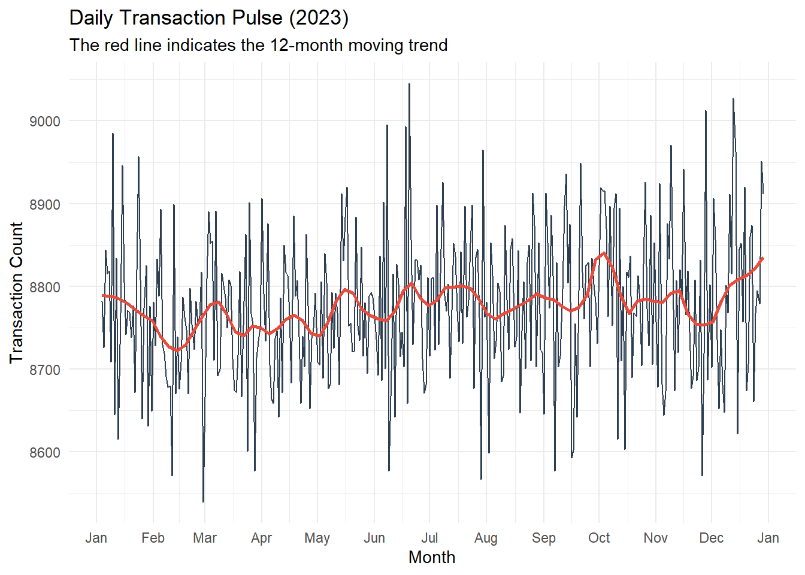
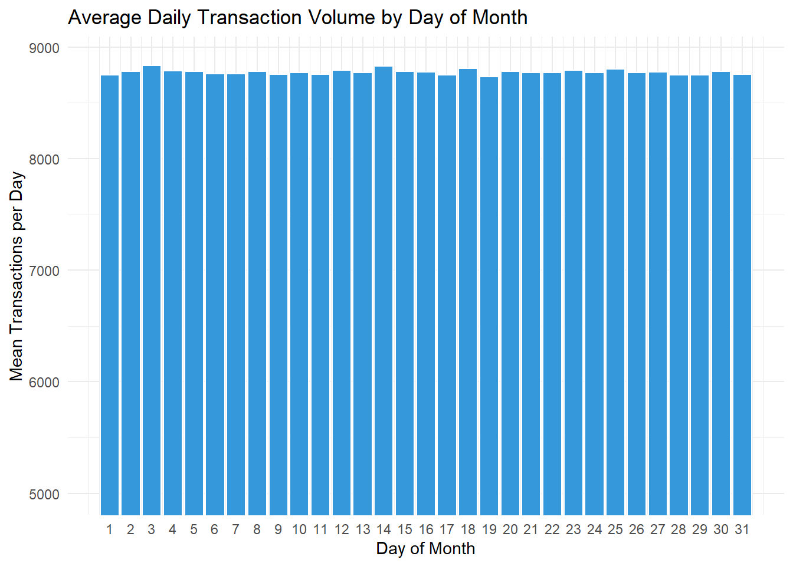
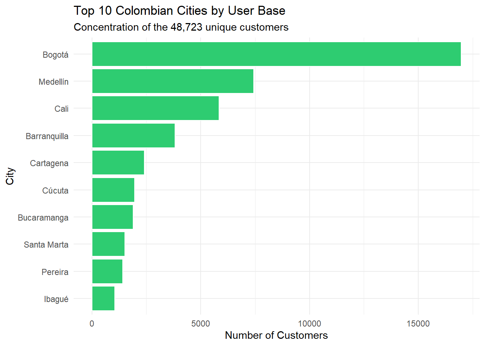
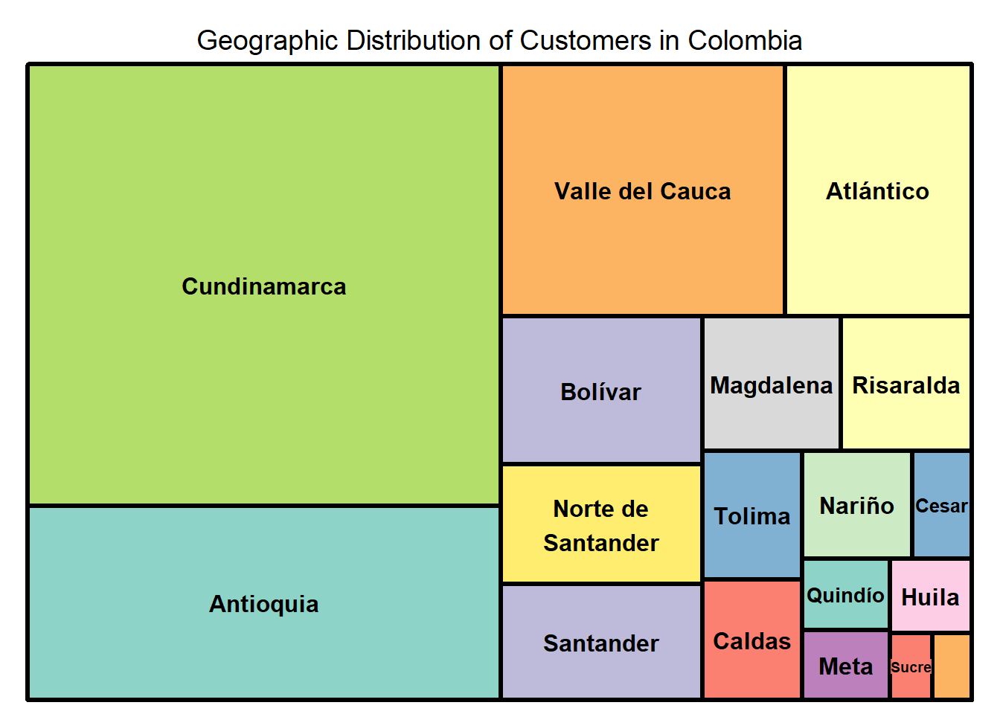
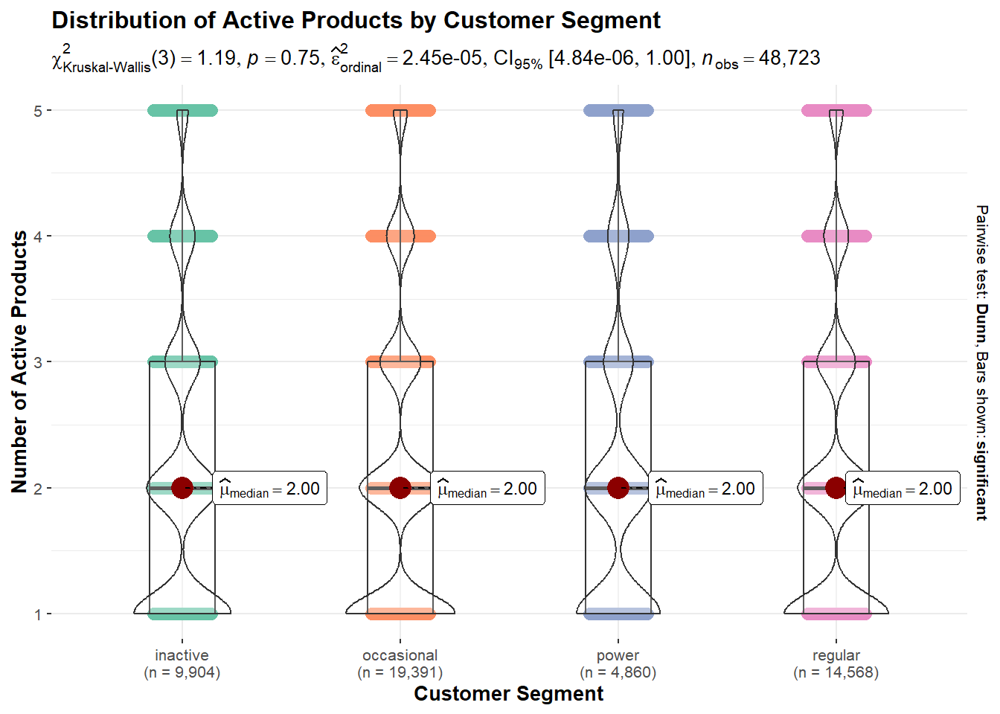
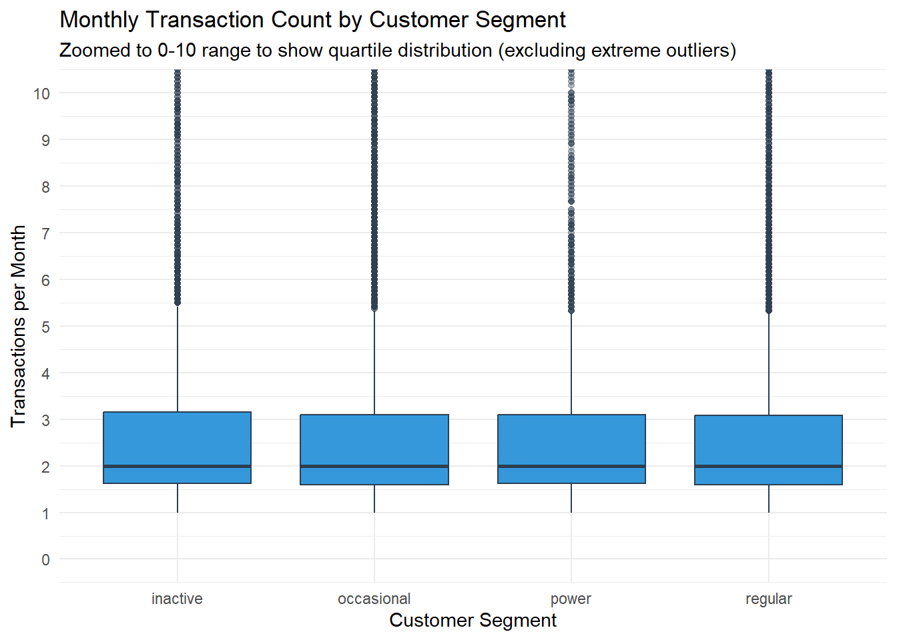
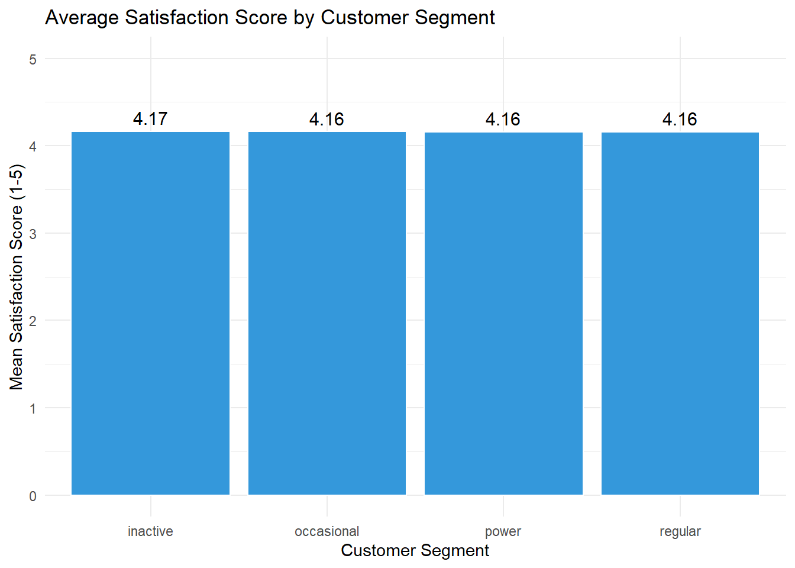
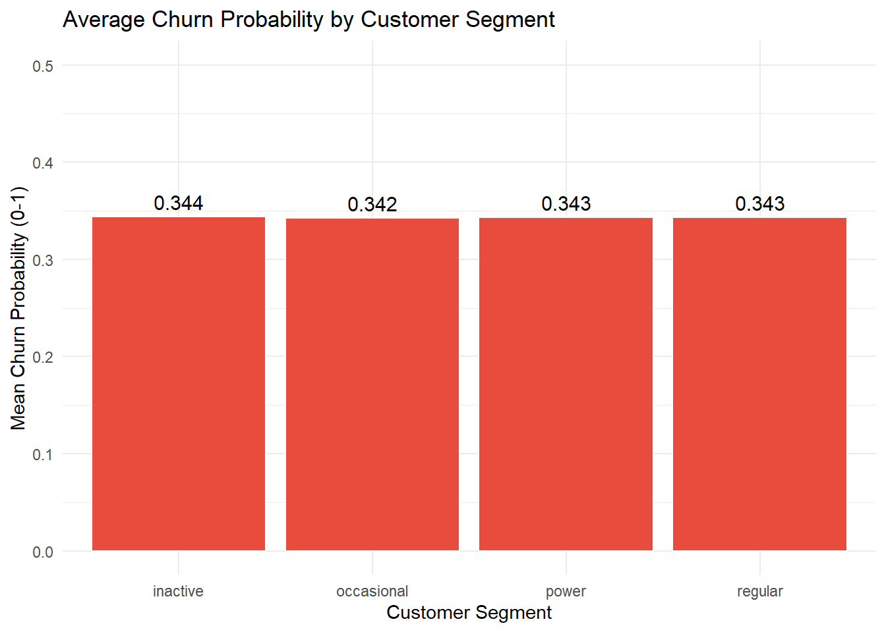

library(tidyverse)
# 1. Load the raw data
transactions_raw <- read_csv("data/transactions_data.csv")
customer_raw <- read_csv("data/customer_data.csv")
# 2. Save as RDS (This will likely shrink the 116MB file to <25MB)
saveRDS(transactions_raw, "data/transactions_data.rds")
saveRDS(customer_raw, "data/customer_data.rds")
# Load the lightweight RDS files
transactions <- readRDS("data/transactions_data.rds")
customers <- readRDS("data/customer_data.rds")
# Prepare Master Data Frame
master_df <- transactions %>%
mutate(date = as.Date(date, format = "%m/%d/%Y")) %>%
left_join(customers, by = "customer_id")COFINFAD: Colombian Fintech Financial Analysis
Project Overview & Background
The Objective
The objective of this project is to understand the behaviors behind customer transactions and how socio-demographic factors—such as age, income, and occupation—affect customer transactions. By applying statistical correlation techniques, we aim to identify which personal attributes are the true drivers of financial activity within the Colombian fintech ecosystem.
Regional Context: Socio-Demographic Diversity
Colombia’s unique social structure provides a rich environment for demographic behavioral analysis:
Urban-Rural Divide: Economic activity is heavily concentrated in the “Golden Triangle” of Bogotá, Medellín, and Cali. We investigate if geography is a primary factor in transaction frequency or if digital adoption has bridged the regional gap.
The Emerging Middle Class: With a median age of 33, the Colombian workforce is transitioning into digital-first banking. This project evaluates how income brackets and education levels correlate with transaction volumes to see if wealth is a prerequisite for high engagement.
Professional Variance: From independent freelancers to corporate engineers, we analyze how occupational status acts as a factor in how frequently users interact with their digital wallets.
Analytical Framework: Socio-Demographic Correlation
To isolate the influence of these factors, we utilize a Correlation-First approach:
Metric Derivation: We normalize the data by calculating the Average Transaction Value (Total Volume / Count) to move beyond surface-level totals and understand the “per-action” behavior of different groups.
Non-Parametric Testing: Recognizing that income and transaction data are often heavily skewed, we employ Spearman’s Rank Correlation (via
ggstatsplot) to assess the strength of relationships between demographic variables and transaction intensity.Faceted Comparison: We utilize faceting to determine if socio-demographic correlations remain consistent across different segments, or if certain groups (e.g., specific age brackets or genders) exhibit unique behavioral outliers.
Our Data
The dataset captures this transition from traditional cash-based behavior to a digital-first economy.
Transactional Data: Captures the “pulse” of activity across 3.1M+ records, categorized into
Transfer,Withdrawal, andPayment.Customer Profiles: Includes 54 variables that allow us to see how demographics (like the income_bracket or location) correlate with app_logins_frequency and satisfaction_score.
Data Preparation
Given the scale of the Colombian dataset (116MB CSV), we prepare the data for efficient R-based analysis:
Compression: Raw
.csvfiles are converted to.rdsformat to fit within GitHub’s 100MB limit while maintaining high-speed loading in R.Relational Integration: We join the transactional “Fact” table with the customer “Dimension” table using
customer_id.Variable Encoding: Categorical metrics (e.g.,
acquisition_channel,clv_segment) are converted to factors to facilitate the Confirmatory Data Analysis (CDA) phase.
The “Pulse” of the Fintech (Temporal Analysis)
Visualize the “heartbeat” of Colombian digital finance.
What to do: Plot daily and monthly transaction volumes.
Observation: Look for “Payday Peaks” (usually the 15th and 30th of the month in Colombia) and holiday surges (December).
Tech Suggestion: Use
ggplotly()on a line chart so you can hover over specific days to see the exact transaction count.
Daily Pulse (Line Chart)
library(tidyverse)
library(lubridate)
# 1. Load Data
transactions <- readRDS("data/transactions_data.rds")
# 2. Prep Daily Data
daily_vol <- transactions %>%
mutate(date = as.Date(date, format = "%m/%d/%Y")) %>%
group_by(date) %>%
summarise(tx_count = n())
# 3. Plot Daily Pulse
ggplot(daily_vol, aes(x = date, y = tx_count)) +
geom_line(color = "#2c3e50", size = 0.5) +
# Adding a trend line to see the big picture
geom_smooth(method = "loess", span = 0.1, color = "#e74c3c", se = FALSE) +
labs(title = "Daily Transaction Pulse (2023)",
subtitle = "The red line indicates the 12-month moving trend",
x = "Month", y = "Transaction Count") +
scale_x_date(date_breaks = "1 month", date_labels = "%b") +
theme_minimal()
Average Volume by Day of Month (Bar Chart)
library(tidyverse)
library(lubridate)
transactions <- readRDS("data/transactions_data.rds")
day_counts <- transactions %>%
mutate(date = as.Date(date, format = "%m/%d/%Y"),
day_of_month = mday(date)) %>%
group_by(date, day_of_month) %>%
summarise(daily_total = n(), .groups = "drop")
avg_payday_pulse <- day_counts %>%
group_by(day_of_month) %>%
summarise(avg_transactions = mean(daily_total))
# 3. Plot with Zoomed Y-Axis
ggplot(avg_payday_pulse, aes(x = day_of_month, y = avg_transactions)) +
geom_col(fill = "#3498db", color = "white") +
scale_x_continuous(breaks = 1:31) +
# This line starts the view at 7,500 and lets the top adjust automatically
coord_cartesian(ylim = c(5000, 8900)) +
labs(title = "Average Daily Transaction Volume by Day of Month",
x = "Day of Month",
y = "Mean Transactions per Day") +
theme_minimal()
Demographic & Geographic Adoption
To see who is actually using the with 48,000+ customers across cities like Bogotá, Medellín, and Cali.
Treemap: Transaction volume by location. (Is Bogotá dominating, or are smaller cities like Pereira showing higher growth per capita?)
Top 10 Cities by User Base
library(tidyverse)
# 1. Load Customer Data
customers <- readRDS("data/customer_data.rds")
# 2. Process Location Data
# Splitting "City, Department" and counting users
city_dist <- customers %>%
separate(location, into = c("city", "department"), sep = ", ") %>%
group_by(city) %>%
summarise(user_count = n()) %>%
arrange(desc(user_count)) %>%
slice_head(n = 10)
# 3. Static Bar Chart
ggplot(city_dist, aes(x = reorder(city, user_count), y = user_count)) +
geom_col(fill = "#2ecc71", color = "white") +
coord_flip() + # Flip for better readability of city names
labs(title = "Top 10 Colombian Cities by User Base",
subtitle = "Concentration of the 48,723 unique customers",
x = "City",
y = "Number of Customers") +
theme_minimal()
Treemap of Customer Distribution
pacman::p_load(treemap,treemapify)library(tidyverse)
library(treemap)
library(treemapify)
geo_data <- customers %>%
separate(location, into = c("city", "department"), sep = ", ") %>%
group_by(department, city) %>%
summarise(user_count = n(), .groups = "drop")
# 3. Create the Treemap
# Following the 'treemap' package syntax from R4VA
treemap(geo_data,
index = c("department", "city"), # Hierarchy: Dept first, then City
vSize = "user_count", # Size based on number of users
type = "index", # Color based on index levels
title = "Geographic Distribution of Customers in Colombia",
palette = "Set3", # Professional color palette
border.col = c("black", "white"),# Distinct borders for levels
border.lwds = c(3, 1), # Thicker borders for Departments
fontsize.labels = c(12, 8), # Larger font for Dept, smaller for City
fontcolor.labels = "black",
inflate.labels = FALSE)
Behavioral Segmentation
Statistical Analysis of Product Adoption
This chart answers: “Do ‘Power’ users actually hold more active products than ‘Regular’ or ‘Inactive’ users, and is the difference statistically significant?”
# 1. Load Libraries
library(tidyverse)
library(ggstatsplot)
# 2. Load Customer Data
customers <- readRDS("data/customer_data.rds")
# 3. Create Statistical Comparison Plot
# We use ggbetweenstats to compare 'active_products' across 'customer_segment'
set.seed(123) # For reproducibility of jitter points
ggbetweenstats(
data = customers,
x = customer_segment,
y = active_products,
type = "nonparametric", # Financial behavior is often non-normal
plot.type = "boxviolin",
palette = "Set2",
title = "Distribution of Active Products by Customer Segment",
xlab = "Customer Segment",
ylab = "Number of Active Products",
messages = FALSE
)
There is no statistically significant difference in the number of active products between these four segments. Whether a customer is “inactive” or a “power” user, they tend to hold the same variety of products.
Since product ownership is virtually identical across all groups, “product count” is not the factor driving customer engagement or segment classification in your dataset. A “Power” user isn’t someone who has more products; they likely use their existing products more frequently or generate higher transaction volumes.
Boxplot of Monthly Transactions by Segment
library(tidyverse)
# 2. Create the Boxplot
ggplot(customers, aes(x = customer_segment, y = monthly_transaction_count)) +
# Using a uniform color as requested
geom_boxplot(fill = "#3498db", color = "#2c3e50", outlier.alpha = 0.2) +
# Zooming in to the 0-10 range so the boxes are actually visible.
# This is necessary because 75% of users are below 4 transactions.
coord_cartesian(ylim = c(0, 10)) +
scale_y_continuous(breaks = seq(0, 10, by = 1)) +
labs(title = "Monthly Transaction Count by Customer Segment",
subtitle = "Zoomed to 0-10 range to show quartile distribution (excluding extreme outliers)",
x = "Customer Segment",
y = "Transactions per Month") +
theme_minimal()
The “thick line” inside each box (the median) will sit at exactly 2 for every single segment. This is the strongest visual proof yet that frequency does not define a “Power” user in this dataset.
Satisfaction & Churn Analysis
Average Satisfaction Score by Segment
This chart checks if “Power” users are simply the most satisfied with the service.
library(tidyverse)
# 2. Prepare Data: Calculate Mean Satisfaction
sat_summary <- customers %>%
group_by(customer_segment) %>%
summarise(mean_sat = mean(satisfaction_score, na.rm = TRUE))
# 3. Create the Bar Chart
ggplot(sat_summary, aes(x = customer_segment, y = mean_sat)) +
geom_col(fill = "#3498db", color = "white") +
# Adding text labels to show the extreme similarity
geom_text(aes(label = round(mean_sat, 2)), vjust = -0.5, size = 4) +
labs(title = "Average Satisfaction Score by Customer Segment",
x = "Customer Segment",
y = "Mean Satisfaction Score (1-5)") +
# Zooming y-axis slightly to see the tiny differences
coord_cartesian(ylim = c(0, 5)) +
theme_minimal()
Emotional sentiment is consistent across all four user categories
Average Churn Probability by Segment
This chart examines if “Power” status is a marker for loyalty (lower churn risk).
# 1. Prepare Data: Calculate Mean Churn Probability
churn_summary <- customers %>%
group_by(customer_segment) %>%
summarise(mean_churn = mean(churn_probability, na.rm = TRUE))
# 2. Create the Bar Chart
ggplot(churn_summary, aes(x = customer_segment, y = mean_churn)) +
geom_col(fill = "#e74c3c", color = "white") + # Using red for 'Risk' metrics
geom_text(aes(label = round(mean_churn, 3)), vjust = -0.5, size = 4) +
labs(title = "Average Churn Probability by Customer Segment",
x = "Customer Segment",
y = "Mean Churn Probability (0-1)") +
coord_cartesian(ylim = c(0, 0.5)) +
theme_minimal()
Power users are just as likely to churn as Inactive users